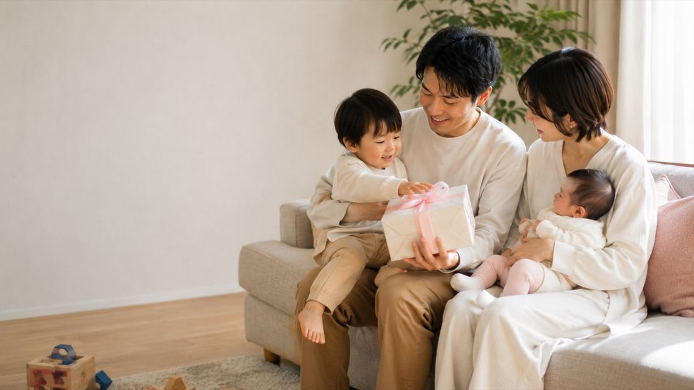
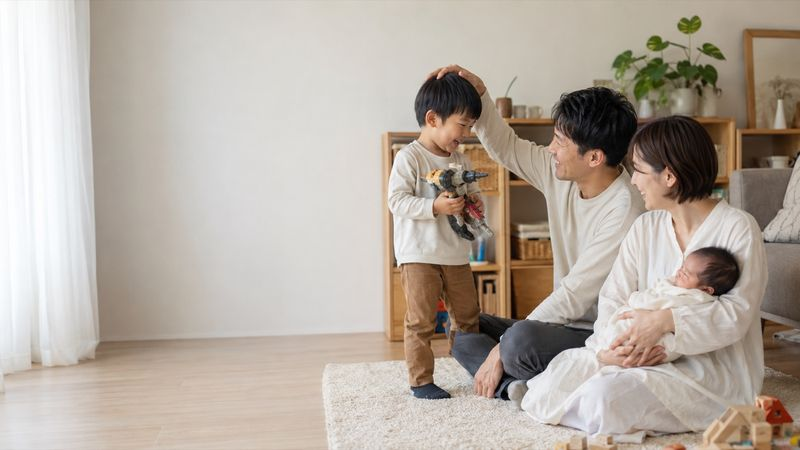
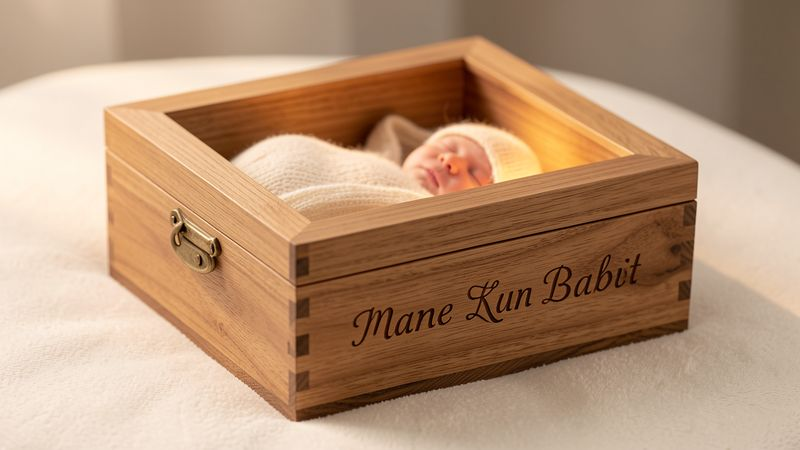
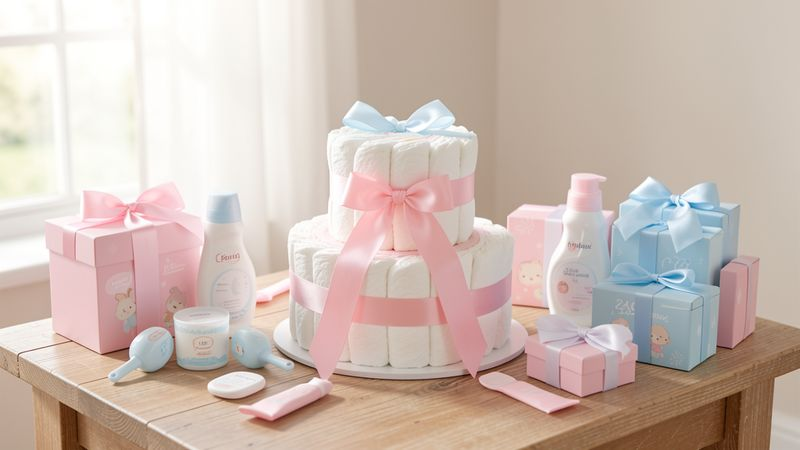
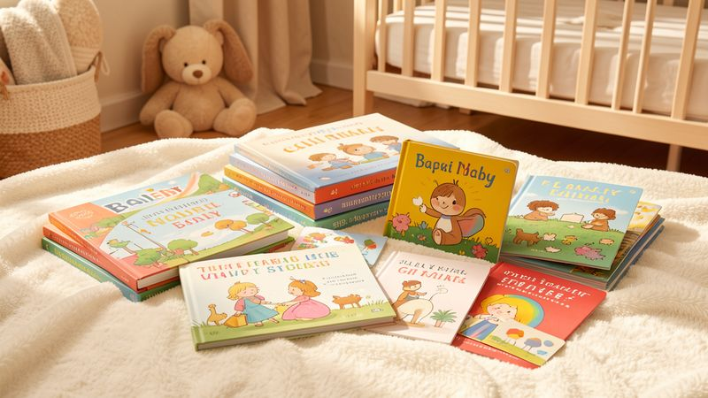
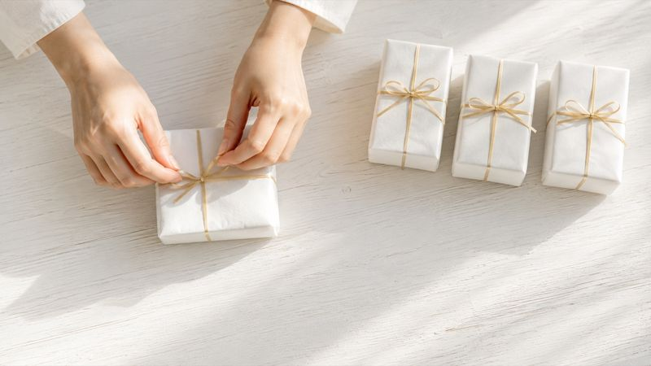
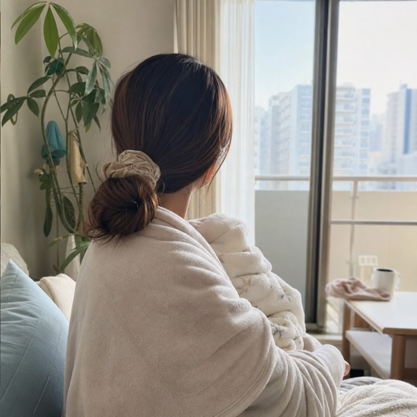
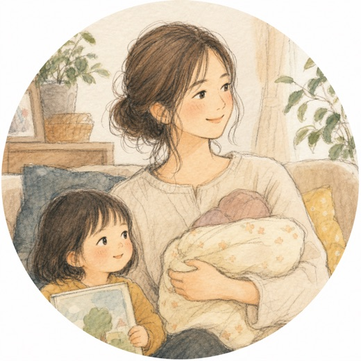
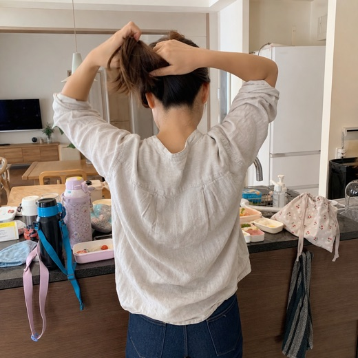
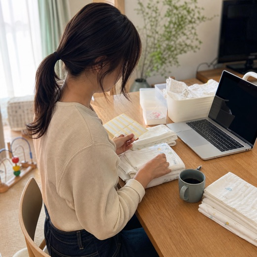

迷ったら
「消耗品＋上の子にも少し」
が強いです。
2人目は、赤ちゃん用品がすでに揃っていることが多め。おむつやギフトカードのように確実に使えるものへ寄せると、相手も受け取りやすくなります。
2人目ガイドを読む →
2人目は、赤ちゃん用品がすでに揃っていることが多め。おむつやギフトカードのように確実に使えるものへ寄せると、相手も受け取りやすくなります。
2人目ガイドを読む →1,871件の商品リサーチをもとに、Amazon ／ 楽天 ／ Yahoo で探しやすい候補を4つの棚に分けました。
華やかさより実用性。サイズやメーカーだけ確認できれば、2人目にも強い候補です。
赤ちゃんだけでなく上の子にも届くと、家族全体で受け取りやすい贈り物になります。
便利だけれど、サプライズには不向き。欲しい型番が分かっている時に強い棚です。
 困ったもの
困ったもの
ぬいぐるみ、服、スキンケア。悪気はなくても困られやすい理由を整理しました。
 嬉しいもの
嬉しいもの
現金、消耗品、体験ギフト。ちゃんと使ってもらいやすいものを予算別に。

2人目お下がりがある家庭に、何を贈ると負担になりにくいか。
 2人目
2人目
スタイは定番だが、2人目以降はすでに持っている可能性が高い。例外と代替案を整理。

ギフト選び名入れタオルや命名書のリアルな評価。フリマサイトの出品傾向から見えた贈り方のコツ。

トレンドカタログギフト、おむつケーキ、ソープフラワー。出品データから見えた今のトレンド。
 2人目
2人目
2人目の出産祝い、上の子にも小さなギフトを。兄弟姉妹の受け入れがスムーズになる選び方。
もらう側のリアルな本音と、スマートな渡し方のコツ。

嬉しいもの現金ほど味気なくなく、品物より自由がきく。上の子の絵本にも使えて便利。
 困ったもの
困ったもの
定番だからこそ注意したいおくるみ選び。もらう側のリアルな事情と、本当に助かる選び方。

内祝い相場、のし、お礼状。将来的な内祝い専門サイトの入口として。
以下の4人は、贈り物を選ぶ視点を整理するための架空のペルソナです。写真も生成画像で、記事のコメントは実在の方への取材・引用ではありません。

30歳。0歳2か月の男の子を育児中。ベビー用品はまだ手探りで、収納少なめのマンション暮らし。

34歳。4歳の上の子と0歳の赤ちゃん。お下がりが多く、赤ちゃん返り中の上の子ケアも大事。

38歳。小学生、園児、0歳の3人育児。物よりも、家事と買い出しの負担が減るものを重視。

32歳。育休後に復職予定。保育園準備も見据えて、洗いやすさ・名前つけ・時短を意識。
「困った」「助かった」の理由を、収納・サイズ・好み・2人目事情に分けて確認します。
商品リンクを入れる場合も、向いている家庭と避けたい家庭を同じ場所に書きます。
競合の多い一般論ではなく、お下がり・上の子・消耗品・現金の渡し方に絞って深掘りします。